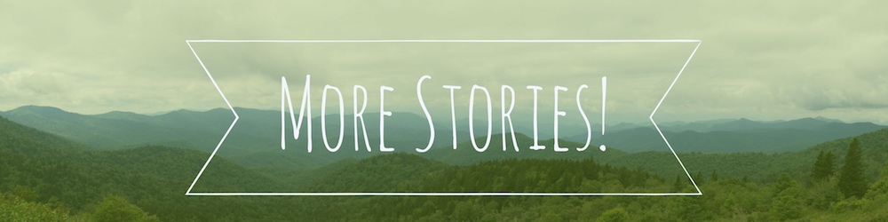

August 13, 2017
Highlights
Nashville Nightlife
Skull's Rainbow Room
Helen's Bar BQ
After a sleepless night in North Carolina's Pisgah National Forest, we drove due west to Nashville, Tennessee. Tired and hungry, we headed straight to Hattie B's Hot Chicken. After a 2 hour wait we were treated to the best fried chicked of our lives. Next time, though, we'll be sure to order ahead.
To walk off our newly added calories, we took a stroll around Vanderbilt's campus, then stopped in for live music at Centennial Park.
The next day we shared a moon pie: a cookie-sized confection that is essentially a marshmallow-graham cracker sandwich. Apparently these are a Tennessee thing. In the evening, we headed to Skull's Rainbow Room for dinner. A few blocks removed from the gaudiness of Broadway, Skull's sits in the narrow Painter's Alley and looks like a dangerous dive bar from the outside; but once inside you might mistake it for a classy supper club straight from the 50s. If we could, we'd go back to this restaurant a hundred more times. Amazing food, live music, and an enchanting atmosphere made this one of our favorite meals ever.
We hoped to stop at a few Broadway bars on the walk back to our hotel, but had already spent all our money on dinner (still worth it btw). Nevertheless, we could see and hear a lot from the sidewalk. Nashville is obviously an amazing music city, and there seemed to be even more bands playing than in New Orleans.
Walking down the Cumberland River, we were treated to an impromptu fireworks show over Nissan Stadium. Two nights wasn't nearly enough to get our fill of Nashville, so we hope to return to this great city again some day soon.
The following morning we were bound for Arkansas, but made a quick stop outside Memphis, TN for some of Helen's famous Bar BQ. True homemade barbecue was a wonderful way to say goodbye to the Volunteer State.
